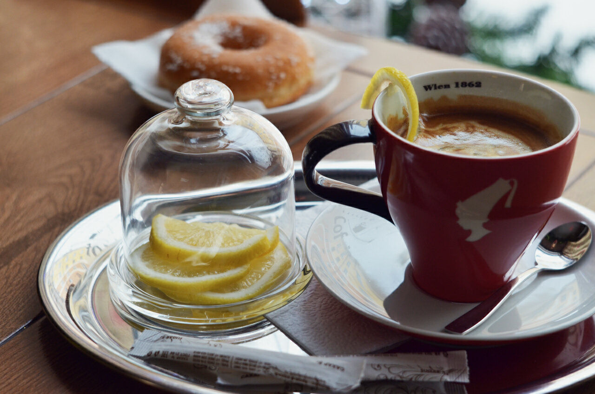
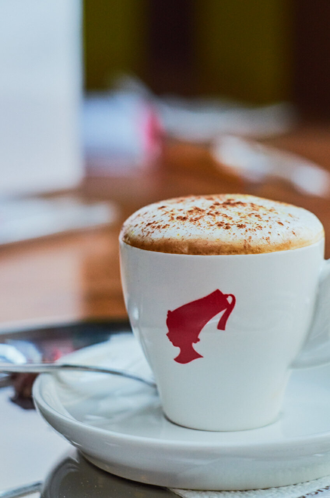

Капучино
Кофе с молоком и молочной пеной.
Екатеринбург / Машиностроителей, 45
Кофейня «Тардис», Машиностроителей, 45.
Фотографии, меню и маршрут — ниже.

01 / Место для вашей паузы
«Тардис» — кофейня на Машиностроителей, 45. Здесь можно выпить кофе, взять напиток с собой или начать день с завтрака.
Перед визитом посмотрите расположение кофейни на карте. Актуальные часы работы и меню доступны в карточке заведения.
Посмотреть кофейню на карте ↗
02 / Маленький кофейный ритуал
Кофе с молоком и молочной пеной.
Кофе с большим количеством молока.
Напиток без кофе. Состав уточните у бариста.

03 / Чашка, столик, ваш день
Кофейня живёт на Машиностроителей, 45. Загляните по пути, возьмите кофе с собой или останьтесь на маленькую паузу.
Заглянуть во ВКонтакте ↗04 / До встречи
Екатеринбург, Уралмаш
улица Машиностроителей, 45
Связаться с кофейней
+7 (343) 300-15-21Перед поездкой уточните график.
Меню и наличие — у бариста.